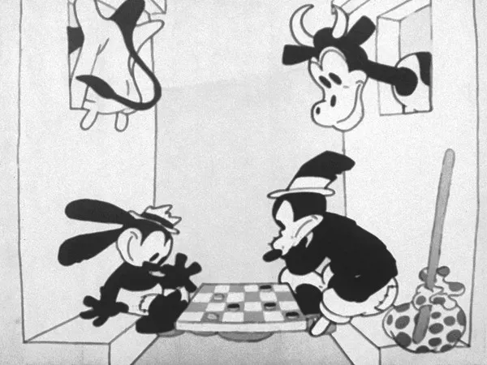
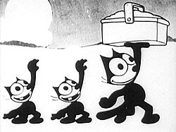

The 1920s were a golden age of cartoons, when black-and-white drawings came alive with wild imagination, slapstick comedy, and unforgettable characters. With every bouncing piano note and exaggerated movement, these early cartoons turned simple sketches into chaotic adventures full of mischievous animals, daring heroes, and ridiculous villains. Before modern animation had color, voices, or advanced technology, artists created entire worlds frame by frame, making audiences laugh and wonder at what they were seeing. The strange, energetic style of 1920s cartoons helped lay the foundation for the animation industry, proving that even a few drawings on a screen could become something truly magical.

The 1920s introduced some of the biggest stars in early cartoon history, including Felix the Cat, one of the most famous characters of the silent-film era, known for his mischievous personality and clever adventures. Oswald the Lucky Rabbit also became popular toward the end of the decade, bringing a playful and energetic style to animation. Other memorable characters, such as Koko the Clown and Bimbo, helped make early cartoons more creative, funny, and exciting. These cartoon stars may have looked simple compared with modern animated characters, but they were pioneers who helped shape the future of animation and inspired generations of cartoon creators.